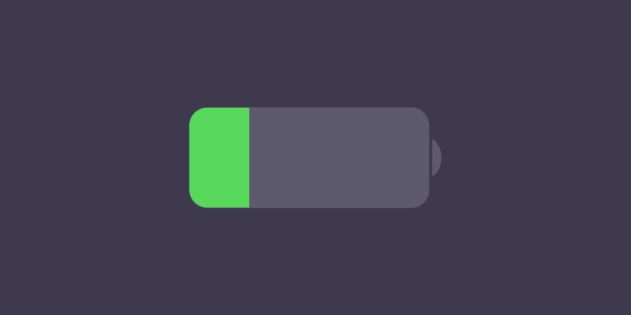
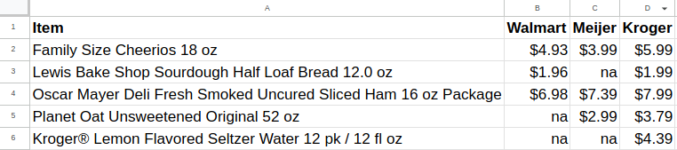

Low-Power Mode
2024-12-17

Many people are excited and energized during this time of year. They prepare to spend time with family and friends during the holidays.
Because cold weather is unpredictable I plan for delays, malfunctions, outages, conflicts from misunderstands or people being jerks. I have backup plans and emergency supplies ready.
However, during this season, I dislike the cold because it makes it difficult for me to maintain focus. It drains my motivation and physical energy. Thankfully it doesn’t affect my mood or rational decision-making.
To address these issues I put myself in low-power mode. This means I limit my activities to essential daily tasks. I avoid making any big decisions or taking on any new projects. Instead, I use this time to rest and recharge. I take a multivitamin and spend time under full-spectrum light to maintain a positive mood.
I reflect on my experiences over the last year and the lessons I've learned. I challenge myself to let go of outdated thoughts, feelings, beliefs, and behaviors.
Extreme Frugality
While many people are shopping for gifts or the latest trending products, I'm pinching pennies.
During low-power mode I don’t allow myself any unnecessary spending. I have a spreadsheet with a list of all the essential things I buy. I've added pricing columns for all the stores near me. I review each of their websites and compare prices. This process helps me save money. Allowing me to focus on needs over wants.
 Example Spreadsheet
Doing Nothing
While I might feel the drive to keep working. Or, spend time improving my knowledge and skills. I know being busy doesn't equal being productive. Doing nothing and zoning out for a while is essential to allow myself a full creative recharge to avoid burnout.
I prefer to stay home, make comfort food, and watch positive funny shows.
I know, when I feel recharged, I’ll get back to the grind with renewed enthusiasm and better creative ideas.